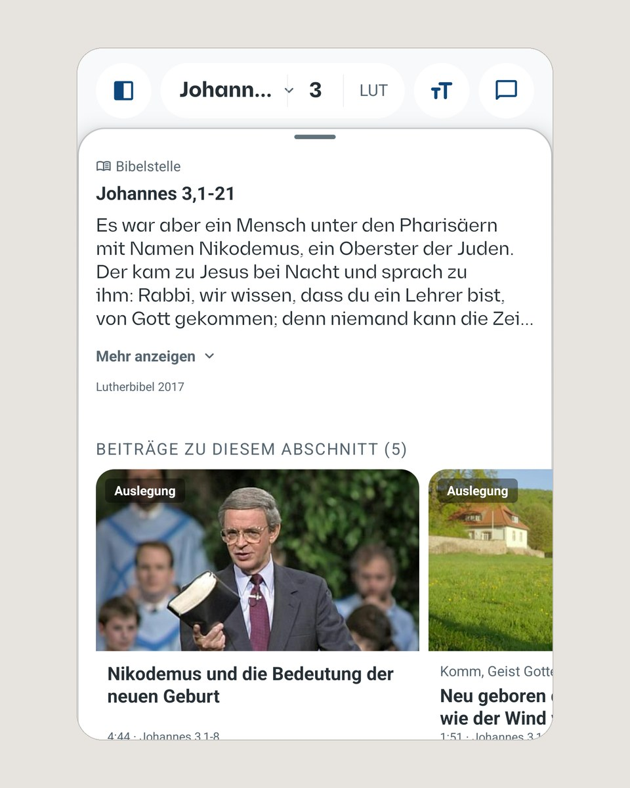
AI Bible Study App
11,405 source-linked clips · Oct 2026
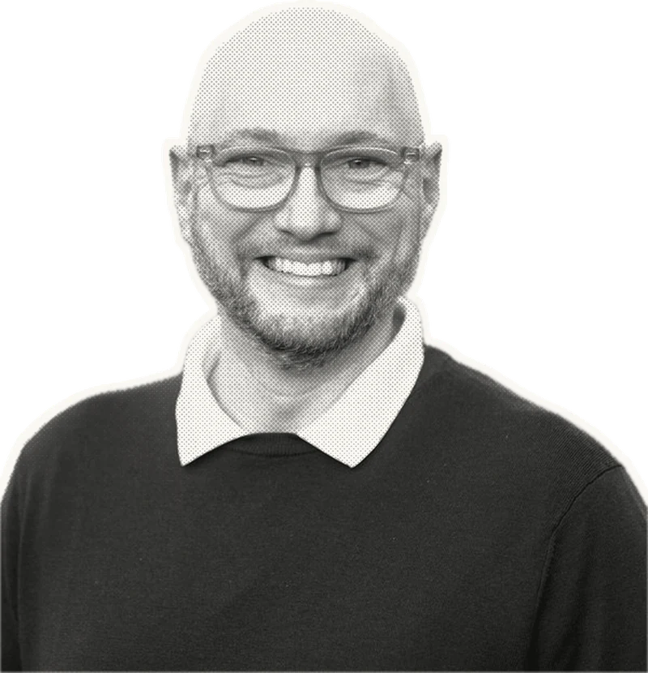
Product strategy → working systems
11,405 source-linked clips · Oct 2026
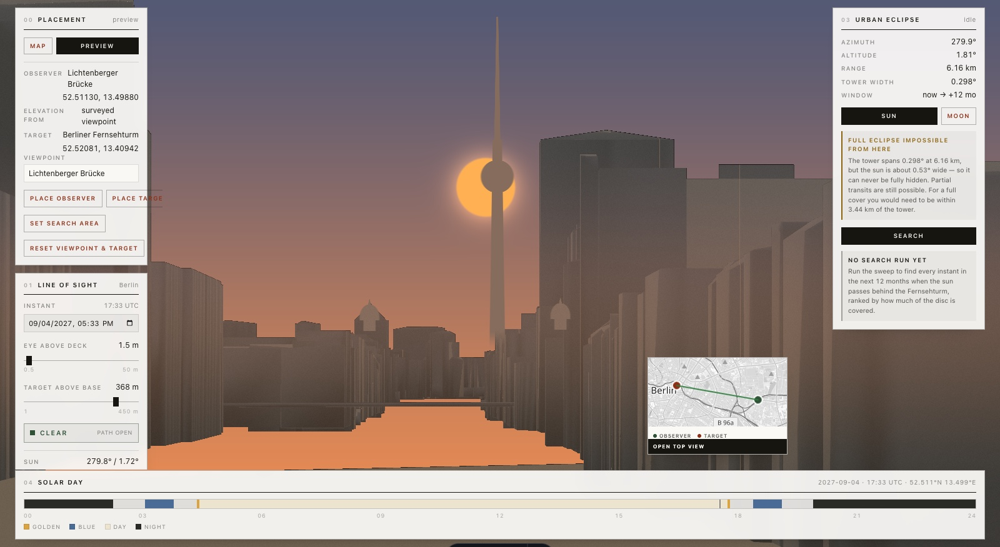
Real geometry, optics, astronomy, and a working 3D scene.
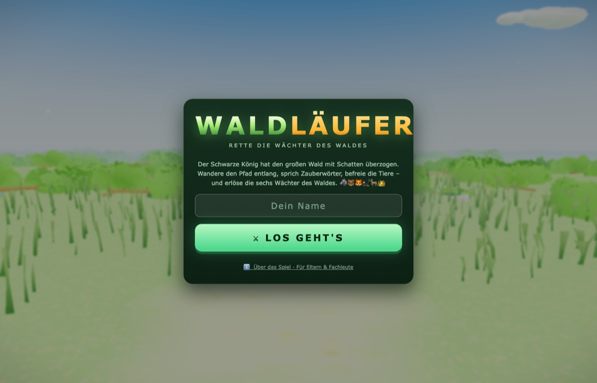
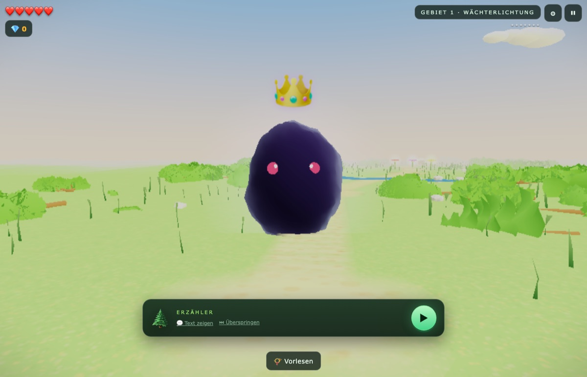
Adaptive reading practice inside a touch-first 3D adventure.
Passage-centered reading, grounded conversation, and an active content pipeline shaped as one product.
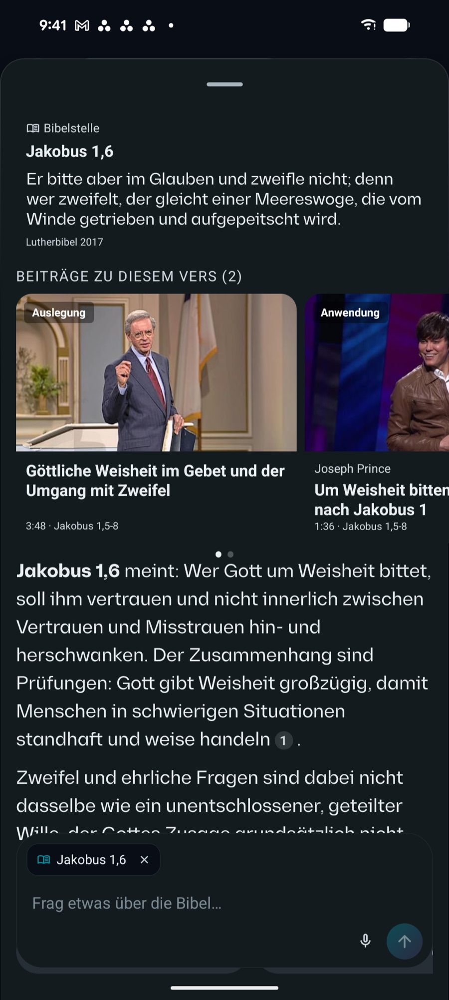
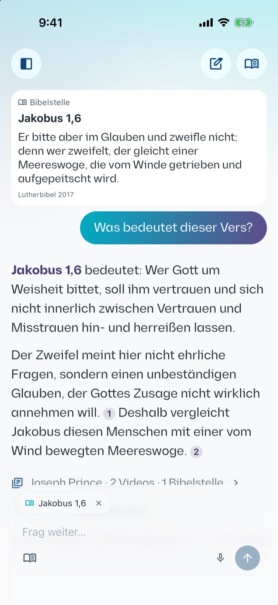
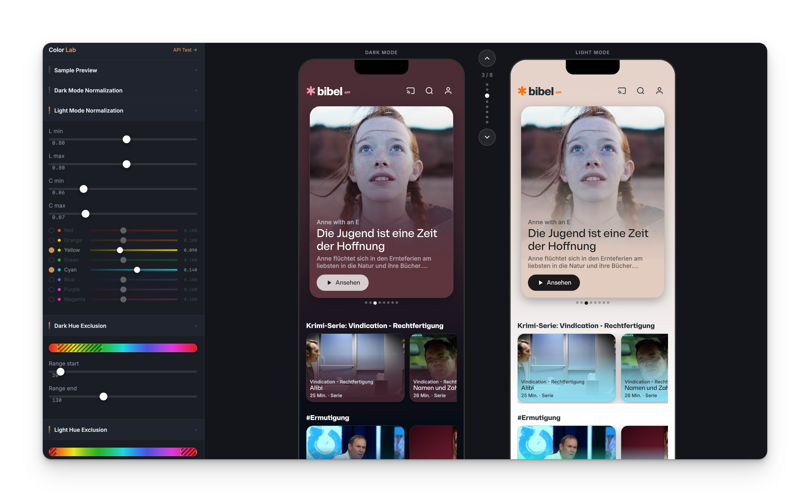
Live product decisions flow into every surface—and into the tools coding agents use.
A quiet menu-bar companion for moving from one meeting to the next with more intention.
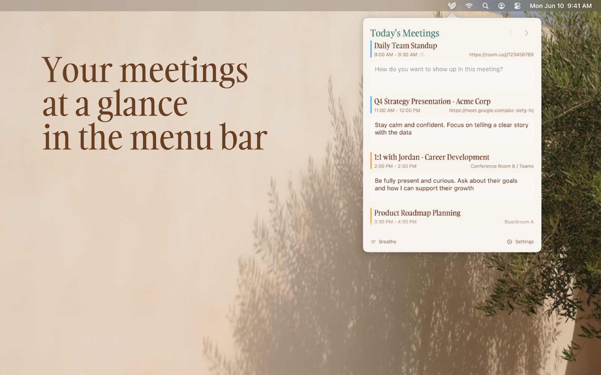
An audio-first spiritual formation companion built around calm daily practices, honest boundaries, and human support.
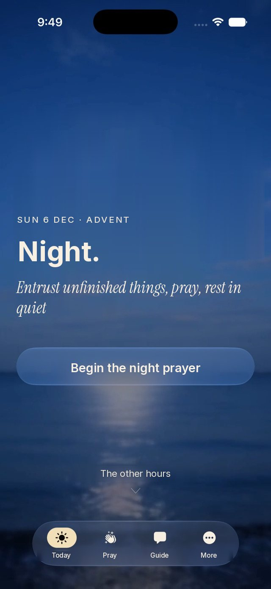
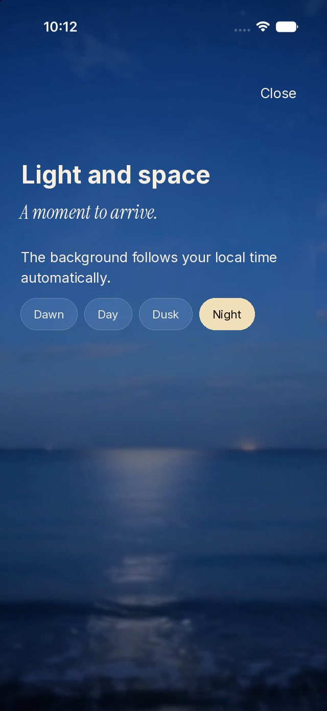